Post-Training LLMs:
From RL Intuition to GRPO
A no-nonsense, math-heavy, code-heavy guide to every major post-training algorithm — and how to apply them to your LLM.

Why Post-Training?
Language models are trained in phases. Understanding what each phase does — and what it cannot do — is the foundation for everything that follows.
The Three Phases
SFT teaches your model the task format, but produces the average of your training set — not the most valid or accurate. Post-training with computable rewards (output validity, answer score, operation efficiency) pushes it toward genuinely good outputs. Crucially, your rewards are automated and exact — a massive advantage over domains that need human raters.
Timeline
Reinforcement Learning — Core Intuition
RL trains an agent (your LLM) to take actions to maximize cumulative reward. For language models, this maps cleanly onto token generation.
The LLM-as-RL Mapping
Classic RL
- Policy π — agent's decision rule
- State s — current situation
- Action a — choice made
- Reward r — feedback signal
For LLMs
- Policy πθ — the language model
- State st — prompt + tokens so far
- Action at — next token to generate
- Reward r — scalar at end of generation
The Master RLHF Objective
The naive objective (maximize E[r]) causes reward hacking. The solution: add a KL divergence penalty that keeps the trained policy close to the reference (SFT) policy:
KL(P∥Q) = EP[log P − log Q] ≥ 0, equals zero only when P = Q. It penalizes distributions that diverge too much from the reference. Without this constraint, the model exploits weaknesses in the reward model and degenerates into gibberish that scores high but is useless.
The Closed-Form Optimal Policy
Setting the functional gradient to zero gives the optimal policy in closed form — this equation is the cornerstone of DPO's derivation:
Rearranging for the Reward Signal
Taking the log of the optimal policy expression and rearranging to solve for r(x,y):
Your reward can combine: validity (does the response sequence compile and produce a valid answer?), answer accuracy (answer score or F1 vs. target answer), and efficiency (fewer operations). These are all computable without human raters — making GRPO with rule-based rewards the ideal choice for your use case.
Reward Modeling
Most RLHF pipelines need a reward model: a neural network scoring a (prompt, response) pair. This section explains how it's built — and when you can skip it entirely.
Preference Data & Bradley-Terry
Instead of absolute ratings (hard, noisy), we collect pairwise preferences: given two responses yw (winner) and yl (loser) to prompt x, which is better? The Bradley-Terry model [1952] converts scores to preference probabilities:
Training the reward model rφ(x,y) via maximum likelihood on preference pairs:
RLHF Pipeline
PPO — The Classic Workhorse
PPO [Schulman et al., 2017] was the dominant RLHF algorithm until DPO arrived in 2023. Understand it deeply because all subsequent methods are either simplifications of or reactions to PPO's problems.
From REINFORCE to Actor-Critic
The fundamental algorithm is policy gradient. REINFORCE computes:
Subtract a learned value function baseline V(st) to get the advantage At = Q(st,at) − V(st). Estimate advantage using Generalized Advantage Estimation (GAE):
The PPO Clipping Mechanism
Vanilla policy gradient takes large destabilizing steps. PPO clips the probability ratio to a trust region:
When A > 0: rt·A says "increase this action's probability." The clip stops us at (1+ε)·A — we can't be too sure. When A < 0: rt·A says "decrease this action's probability." The clip floors us at (1−ε)·A — we can't be too punishing. The min() is pessimistic: always take the smaller (safer) objective value.
PPO for LLMs: The 4-Model Problem
The KL penalty is applied as a per-token reward injection:
For a 7B model: 4 × 7B = 28B parameters in VRAM, plus optimizer states, activations, rollout buffers. The critic is notoriously hard to train — if V(s) estimates are wrong, advantages are noisy and the policy diverges. This is the primary motivation for both DPO and GRPO.
PPO Training Code (TRL)
from trl import PPOTrainer, PPOConfig, AutoModelForCausalLMWithValueHead
from transformers import AutoTokenizer, pipeline
import torch
# 4 models needed for PPO
model = AutoModelForCausalLMWithValueHead.from_pretrained("your-sft-model") # policy + critic
ref_model = AutoModelForCausalLMWithValueHead.from_pretrained("your-sft-model") # reference (frozen)
tokenizer = AutoTokenizer.from_pretrained("your-sft-model")
tokenizer.pad_token = tokenizer.eos_token
reward_pipe = pipeline("text-classification", model="your-reward-model") # reward model
config = PPOConfig(
output_dir="./ppo-output",
learning_rate=1.4e-5,
batch_size=16,
mini_batch_size=4,
ppo_epochs=4, # PPO epochs per rollout batch
lam=0.95, # GAE lambda
cliprange=0.2, # epsilon in PPO clip
init_kl_coef=0.2, # beta (KL penalty coefficient)
target_kl=0.1, # stop updates if KL exceeds this
)
trainer = PPOTrainer(config=config, model=model, ref_model=ref_model, tokenizer=tokenizer)
for batch in trainer.dataloader:
query_tensors = [b for b in batch["input_ids"]]
# Generate: sample from current policy
response_tensors = trainer.generate(query_tensors, max_new_tokens=512, temperature=0.7)
responses = tokenizer.batch_decode(response_tensors, skip_special_tokens=True)
# Score with reward model
rewards = [torch.tensor(r["score"]) for r in reward_pipe(responses)]
# PPO update (computes advantages using value model internally)
stats = trainer.step(query_tensors, response_tensors, rewards)
trainer.log_stats(stats, batch, rewards)
DPO — The Elegant Simplification
In 2023, Rafailov et al. published an insight so clean it almost feels like a trick: you don't need a reward model or a RL loop. The reward is already implicit in the ratio between trained and reference policy.
The Key Insight: Z(x) Cancels
Recall from Section 2: r(x,y) = β log(π*(y|x)/πref(y|x)) + β log Z(x). Now plug this into the Bradley-Terry preference model:
Z(x) = ∑y πref(y|x) exp(r(x,y)/β) is intractable — you'd need to sum over all possible responses. But in the Bradley-Terry model, only the difference of rewards matters. Since Z(x) is the same for yw and yl (same prompt), it cancels exactly. This makes DPO computationally trivial.
What DPO Actually Does
Taking the gradient of the DPO loss shows that training simultaneously:
- Increases log πθ(yw|x) — chosen response gets more probability mass
- Decreases log πθ(yl|x) — rejected response gets less probability mass
- Scales by error — updates are larger when the model currently assigns higher probability to the rejected response
- Uses log-ratios — implicitly regularizes toward the reference policy
Only 2 models (policy + reference). Simple cross-entropy loss. Stable training. No reward model training needed. No RL loop. Much less memory than PPO. Easy to implement with TRL in <20 lines.
Offline: fixed dataset, no exploration. Requires preference pairs (harder to collect than scalar rewards). Can overfit to data distribution. Distribution shift when reference is stale. Can degrade the quality of preferred responses under certain conditions.
DPO Training Code (TRL)
from trl import DPOTrainer, DPOConfig
from transformers import AutoModelForCausalLM, AutoTokenizer
from datasets import Dataset
import torch
model = AutoModelForCausalLM.from_pretrained(
"your-sft-llm-model", torch_dtype=torch.bfloat16)
tokenizer = AutoTokenizer.from_pretrained("your-sft-llm-model")
# Dataset format: prompt + chosen + rejected
# For text: auto-generate pairs by scoring SFT outputs with your reward function
# chosen = highest-scoring generated sequence (or ground truth)
# rejected = lowest-scoring generated sequence
dataset = Dataset.from_dict({
"prompt": ["Explain the trade-offs between PPO and DPO."] * N,
"chosen": ["A clear, well-cited two-paragraph answer..."] * N, # high score
"rejected": ["A short, vague answer with no citations..."] * N, # low score
})
config = DPOConfig(
output_dir="./dpo-llm",
num_train_epochs=2,
per_device_train_batch_size=2,
gradient_accumulation_steps=8,
learning_rate=5e-7, # conservative LR for DPO
beta=0.1, # KL coefficient beta
loss_type="sigmoid", # standard DPO; alternatives: "ipo", "hinge"
max_length=2048,
bf16=True,
gradient_checkpointing=True,
)
trainer = DPOTrainer(
model=model,
ref_model=None, # TRL auto-creates frozen copy of model
args=config,
train_dataset=dataset,
processing_class=tokenizer,
)
trainer.train()
# Key metrics to monitor in wandb/tensorboard:
# rewards/chosen (should increase), rewards/rejected (should decrease)
# rewards/margins = chosen - rejected (should widen)
# logps/chosen, logps/rejected (log probabilities)
# kl divergence (should stay bounded, watch for spikes)
GRPO — DeepSeek's Modern Workhorse
GRPO (Group Relative Policy Optimization) was introduced in DeepSeekMath [Shao et al., 2024] and became the core of DeepSeek-R1 [DeepSeek-AI, 2025]. It achieves something remarkable: PPO-level online exploration without a critic model.
The Problem GRPO Solves
PPO's critic Vψ(st) estimates expected future reward from each token position. For LLMs this is:
- A full LLM-sized model in memory — doubles the compute cost
- Notoriously hard to train: text-level value estimates are noisy
- The main source of instability and divergence in PPO
GRPO's key insight: If you generate a group of G responses to the same prompt and score them all, the group mean reward is a natural, critic-free baseline estimate. The advantage of each response is simply how much better or worse it is than the group average.
The GRPO Algorithm
Rule-Based Rewards: GRPO's Superpower
DeepSeek-R1's key finding: rule-based rewards (math correctness, code execution) outperform learned reward models for domains with verifiable answers. text generation is exactly this domain:
- Validity (binary): Does the response sequence parse and execute? Does it produce a valid answer body?
- Answer accuracy (continuous): reward = exp(−α · answer_score(generated, target))
- Topological match: Does the number of snippets/sources/results match expectations?
- Efficiency (continuous): reward = max(0, 1 − num_ops / max_ops)
Rule-based rewards cannot be gamed the way learned reward models can. This is why GRPO with rule-based rewards outperformed full RLHF in DeepSeek-R1.
GRPO Training Code (TRL)
from trl import GRPOTrainer, GRPOConfig
from transformers import AutoModelForCausalLM, AutoTokenizer
import torch, re, math
# ── text Reward Functions (rule-based, no learned RM needed) ──────────────────
VALID_OPS = {"query","read_doc","revolve","citation","check_answer","boolean_union","boolean_subtract","loft","sweep"}
def parse_ops(text):
return re.findall(r'(\w+)\([^)]*\)', text)
def validity_reward(completion, **kwargs):
ops = parse_ops(completion)
if not ops: return 0.0
if any(op not in VALID_OPS for op in ops): return 0.0
return 1.0
def text_reward(completion, reference_text=None, **kwargs):
ops = parse_ops(completion)
if not ops or reference_text is None: return 0.5
try:
output = run_model(ops) # your sandbox
cd = answer_score(output, reference_text)
return float(math.exp(-2.0 * cd)) # 1.0 = perfect, 0.0 = far off
except Exception:
return 0.0
def efficiency_reward(completion, **kwargs):
ops = parse_ops(completion)
return max(0.0, 1.0 - len(ops) / 50.0) # penalize > 50 operations
def text_reward_fn(completions, prompts, **kwargs):
"""Main GRPO reward function. Returns list[float], one per completion."""
rewards = []
for i, completion in enumerate(completions):
r_valid = validity_reward(completion)
r_geom = text_reward(completion, **kwargs)
r_eff = efficiency_reward(completion)
rewards.append(0.4 * r_valid + 0.5 * r_geom + 0.1 * r_eff)
return rewards
# ── Model + Config ────────────────────────────────────────────────────────────
model = AutoModelForCausalLM.from_pretrained("your-dpo-llm-model", torch_dtype=torch.bfloat16)
tokenizer = AutoTokenizer.from_pretrained("your-dpo-llm-model")
config = GRPOConfig(
output_dir="./grpo-llm",
num_train_epochs=3,
per_device_train_batch_size=1,
gradient_accumulation_steps=16,
learning_rate=2e-7, # lower than DPO — online updates are noisier
num_generations=8, # G: group size. Higher = more stable, more compute
max_new_tokens=1024,
temperature=0.9, # need diversity in the group; don't set too low
kl_coef=0.04, # beta for KL penalty
cliprange=0.2, # epsilon for PPO clip
bf16=True,
gradient_checkpointing=True,
save_steps=200,
logging_steps=10,
)
trainer = GRPOTrainer(
model=model,
reward_funcs=text_reward_fn, # accepts list of reward functions too
args=config,
train_dataset=train_dataset, # just needs "prompt" column
processing_class=tokenizer,
)
# Key training metrics:
# reward/mean: group average reward (should increase steadily)
# reward/std: diversity within group (if -> 0: mode collapse)
# policy/kl: KL from reference (should stay < 0.5; if spikes: reduce lr)
# policy/entropy: generation diversity (should stay positive)
trainer.train()
The Algorithm Zoo
Beyond PPO, DPO, and GRPO, there's a rapidly expanding ecosystem. Here's the complete map.
Algorithm Family Tree
Comparison Table
| Method | Models Needed | Data Type | Online? | Key Formula Idea | Best For |
|---|---|---|---|---|---|
| PPO | 4× model | Rollouts | Yes | clip(r,1±ε)·A | Complex RM, chat alignment |
| DPO | 2× model | Pref. pairs | No | −log σ(β·Δlog-ratio) | Stable offline training, clean data |
| GRPO | 2× model | Rollouts | Yes | PPO clip + group norm A | Verifiable rewards, reasoning, text ⭐ |
| IPO | 2× model | Pref. pairs | No | ∥β·Δlog-ratio − 1∥² | Avoids DPO degenerate solutions |
| KTO | 2× model | Unpaired labels | No | Kahneman-Tversky value fn | No paired data; just (good/bad) labels |
| ORPO | 1× model | Pref. pairs | No | SFT + λ·odds-ratio | Minimal memory; SFT + alignment in one pass |
| SimPO | 1× model | Pref. pairs | No | −log σ(β·Δavg-logprob − γ) | No reference model, better length handling |
Key Equations for IPO and ORPO
Practical Guide for Your text Model
Theory done. Here is a concrete action plan for post-training your multimodal LLM.
Which Algorithm Should You Use?
Phase 1 — DPO: Collect preference pairs from your SFT model. Generate 2–4 outputs per training image, score with your reward function, take best/worst as chosen/rejected. Train DPO. Fast to set up, very stable, good baseline.
Phase 2 — GRPO: Once DPO baseline is answer, switch to GRPO with your rule-based text reward. GRPO explores online and will push beyond what offline DPO can achieve. With verifiable text rewards (validity + answer score), this is the strongest approach available.
Training Decision Tree
Full Two-Phase Pipeline
"""
Full text Post-Training: Phase 1 (DPO) + Phase 2 (GRPO)
Tested with trl >= 0.12 and transformers >= 4.45
"""
from trl import DPOTrainer, DPOConfig, GRPOTrainer, GRPOConfig
from transformers import AutoModelForCausalLM, AutoTokenizer
from datasets import Dataset
import torch, re, math
# ═══════════════════════════════════════════════════════
# REWARD FUNCTIONS (used in both phases)
# ═══════════════════════════════════════════════════════
VALID_OPS = {"query","read_doc","revolve","citation","check_answer",
"boolean_union","boolean_subtract","loft","sweep"}
def text_reward(completions, prompts=None, **kwargs):
rewards = []
for completion in completions:
ops = re.findall(r'(\w+)\([^)]*\)', completion)
if not ops:
rewards.append(0.0); continue
valid = all(op in VALID_OPS for op in ops)
r_valid = 1.0 if valid else 0.0
r_quality = quality_score(text, kwargs.get("target")) # your impl
r_eff = max(0.0, 1.0 - len(ops) / 50.0)
rewards.append(0.4 * r_valid + 0.5 * r_geom + 0.1 * r_eff)
return rewards
# ═══════════════════════════════════════════════════════
# PHASE 0: Build DPO Dataset from SFT outputs
# ═══════════════════════════════════════════════════════
def build_preference_data(sft_model, tokenizer, questions, n_per_prompt=4):
chosen, rejected, prompts = [], [], []
for q in questions:
prompt = f"{q.text}\nAnswer:"
outputs = [sft_model.generate(prompt, do_sample=True, temp=0.9)
for _ in range(n_per_prompt)]
scores = text_reward(outputs, target=q.reference)
best, worst = max(range(n_per_prompt), key=lambda i: scores[i]), \
min(range(n_per_prompt), key=lambda i: scores[i])
if scores[best] > scores[worst] + 0.1: # only add meaningful gaps
prompts.append(prompt)
chosen.append(outputs[best])
rejected.append(outputs[worst])
return Dataset.from_dict({"prompt": prompts, "chosen": chosen, "rejected": rejected})
# ═══════════════════════════════════════════════════════
# PHASE 1: DPO
# ═══════════════════════════════════════════════════════
def phase1_dpo(sft_model_path, dpo_dataset):
model = AutoModelForCausalLM.from_pretrained(sft_model_path, torch_dtype=torch.bfloat16)
tokenizer = AutoTokenizer.from_pretrained(sft_model_path)
config = DPOConfig(
output_dir="ckpt/dpo", num_train_epochs=2,
per_device_train_batch_size=2, gradient_accumulation_steps=8,
learning_rate=5e-7, beta=0.1, max_length=2048,
bf16=True, gradient_checkpointing=True, warmup_ratio=0.05,
)
DPOTrainer(model=model, ref_model=None, args=config,
train_dataset=dpo_dataset, processing_class=tokenizer).train()
model.save_pretrained("ckpt/dpo-final")
return "ckpt/dpo-final"
# ═══════════════════════════════════════════════════════
# PHASE 2: GRPO
# ═══════════════════════════════════════════════════════
def phase2_grpo(dpo_ckpt, train_dataset):
model = AutoModelForCausalLM.from_pretrained(dpo_ckpt, torch_dtype=torch.bfloat16)
tokenizer = AutoTokenizer.from_pretrained(dpo_ckpt)
config = GRPOConfig(
output_dir="ckpt/grpo", num_train_epochs=3,
per_device_train_batch_size=1, gradient_accumulation_steps=16,
learning_rate=2e-7, num_generations=8, max_new_tokens=1024,
temperature=0.9, kl_coef=0.04, cliprange=0.2,
bf16=True, gradient_checkpointing=True, save_steps=200,
)
GRPOTrainer(model=model, reward_funcs=text_reward, args=config,
train_dataset=train_dataset, processing_class=tokenizer).train()
if __name__ == "__main__":
sft_ckpt = "your-sft-model"
images = load_text_dataset() # your data loader
dpo_data = build_preference_data(AutoModelForCausalLM.from_pretrained(sft_ckpt),
AutoTokenizer.from_pretrained(sft_ckpt), images)
dpo_ckpt = phase1_dpo(sft_ckpt, dpo_data)
phase2_grpo(dpo_ckpt, images)
Hyperparameter Starting Points
| Setting | DPO | GRPO | Notes |
|---|---|---|---|
| Learning rate | 5e-7 | 2e-7 | DPO is offline; GRPO is noisier so go lower |
| β (KL coeff) | 0.1 | 0.04 | Too high = no learning. Too low = KL collapse. Start here. |
| Batch size | 16 effective | 16 effective | Use grad accum to hit this on small GPUs |
| Group size G | N/A | 8 | Increase to 16 for complex text tasks for more stable advantages |
| Temperature | N/A | 0.9 | Need diversity in the group. Don't go below 0.7. |
| Epochs | 2 | 3 | DPO overfits quickly; GRPO benefits from more steps |
| Max tokens | 2048 | 1024 | Keep generated length bounded to control cost |
Common Pitfalls & Red Flags
🚨 KL Collapse
KL divergence spikes, generation quality drops, outputs become repetitive. Fix: Reduce LR, increase β, check reward normalization (rewards at wildly different scales cause this).
🚨 Reward Hacking
Reward goes up but actual quality drops. Fix: Add more reward components, use multiple complementary rewards, reduce group size in GRPO.
🚨 Mode Collapse
All G responses in GRPO group become identical (reward/std → 0). Fix: Increase sampling temperature, reduce kl_coef, add an explicit diversity reward.
🚨 Sparse Reward Signal
All rewards = 0 or 1, no gradient signal in between. Fix: Use smooth rewards like exp(−α·cd) instead of binary thresholds. Add partial credit for syntactically valid but semantically wrong outputs.
References
- Schulman, J., Wolski, F., Dhariwal, P., Radford, A., & Klimov, O. (2017). Proximal Policy Optimization Algorithms. arXiv:1707.06347
- Schulman, J., Moritz, P., Levine, S., Jordan, M., & Abbeel, P. (2015). High-Dimensional Continuous Control Using Generalized Advantage Estimation. arXiv:1506.02438
- Stiennon, N., Ouyang, L., et al. (2020). Learning to Summarize from Human Feedback. NeurIPS 2020. arXiv:2009.01325
- Ouyang, L., Wu, J., et al. (2022). Training Language Models to Follow Instructions with Human Feedback (InstructGPT). NeurIPS 2022. arXiv:2203.02155
- Rafailov, R., Sharma, A., Mitchell, E., et al. (2023). Direct Preference Optimization: Your Language Model is Secretly a Reward Model. NeurIPS 2023. arXiv:2305.18290
- Shao, Z., Wang, P., et al. (2024). DeepSeekMath: Pushing the Limits of Mathematical Reasoning in Open Language Models. arXiv:2402.03300
- DeepSeek-AI (2025). DeepSeek-R1: Incentivizing Reasoning Capability in LLMs via Reinforcement Learning. arXiv:2501.12948
- Azar, M. G., et al. (2023). A General Theoretical Paradigm to Understand Learning from Human Feedback. arXiv:2310.12036
- Ethayarajh, K., et al. (2024). KTO: Model Alignment as Prospect Theoretic Optimization. arXiv:2402.01306
- Hong, J., et al. (2024). ORPO: Monolithic Preference Optimization without Reference Model. arXiv:2403.07691
- Meng, Y., et al. (2024). SimPO: Simple Preference Optimization with a Reference-Free Reward. arXiv:2405.14734
- Williams, R.J. (1992). Simple Statistical Gradient-Following Algorithms for Connectionist Reinforcement Learning (REINFORCE). Machine Learning, 8, 229–256.
- Bradley, R.A. & Terry, M.E. (1952). Rank Analysis of Incomplete Block Designs I: The Method of Paired Comparisons. Biometrika, 39(3/4), 324–345.